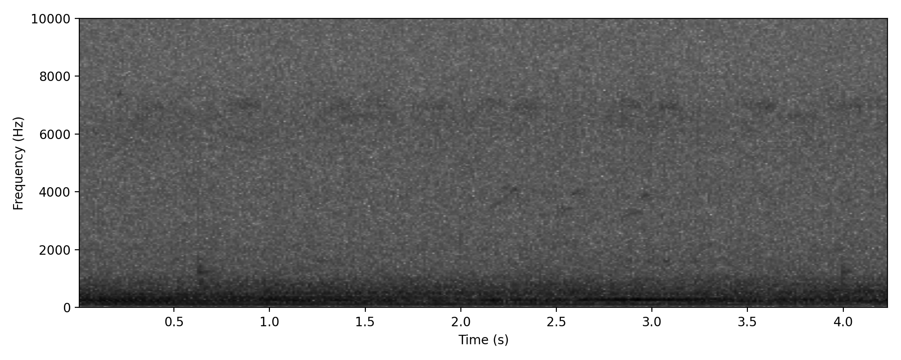
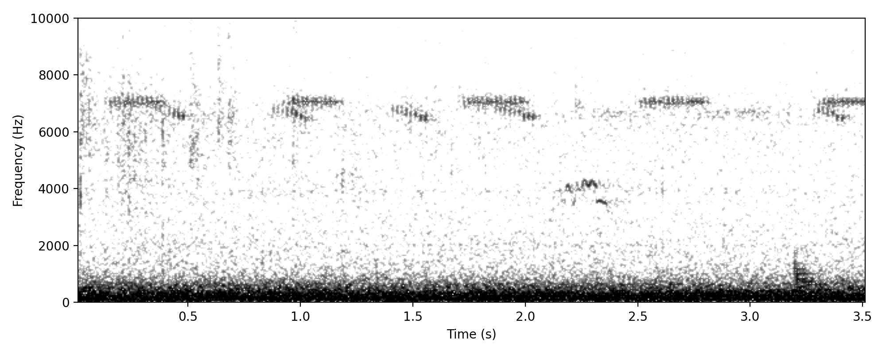
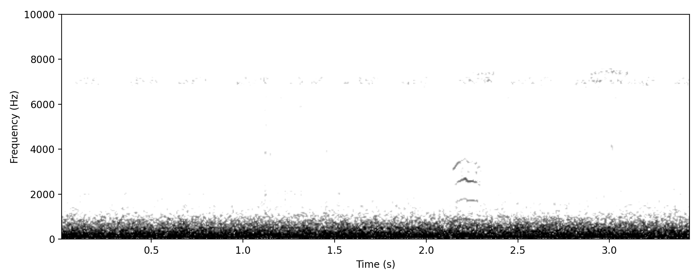
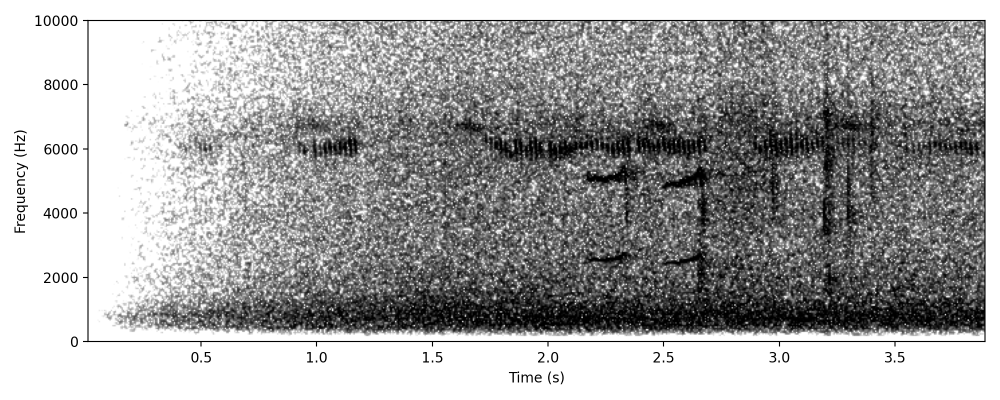
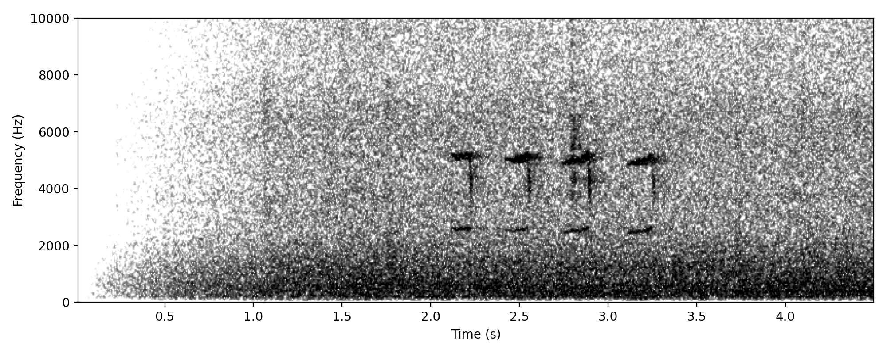

Downwards pew
Project clips
Not sure what this is Featured

Delaney Circuit (-27.52149, 153.11081), 22 Mar 2026, 23:55:40, Annotation 1278
High Buff-banded Rail-like
Putative nocturnal call type
Neatly structured short liquid trill, recalling Buff-banded Rail, but higher pitched and a little longer.
Project clips
Not sure what this is Featured

Delaney Circuit (-27.52149, 153.11081), 23 Mar 2026, 01:54:30, Annotation 1336
low fast piping
Putative nocturnal call type
Reminiscent of Pale-vented Bush-hen, fast piping notes around 800 Hz, can be interspersed with short upward-infected note around 850 Hz
Evidence for identification
No idea what this is.
Project clips
Moorhen-like Squark
Putative nocturnal call type
Superficially moorhen-like, check whether this could be glider
Project clips
Moorhen-like but prob not a moorhen? Featured

Delaney Circuit (-27.52149, 153.11081), 22 Mar 2026, 23:34:55, Annotation 1258
pew pew pew
Putative nocturnal call type
Unidentified mystery call that is frequently heard at night during migration. Clear ] shape on spectrogram.
Project clips
Good example of this exasperatingly common, but as yet unidentified mystery NFC. Featured

Delaney Circuit (-27.52149, 153.11081), 21 Apr 2022, 20:28:47, Annotation 4
Suggestions as to what this bird is range from Noisy Miner to Brown Quail and Magpie-lark. From Blue-faced Honeyeater to Leaden Flycatcher!
Typical example, slightly faint

Delaney Circuit (-27.52149, 153.11081), 21 Apr 2022, 00:35:47, Annotation 173
Typical example, rather distorted

Delaney Circuit (-27.52149, 153.11081), 21 Apr 2022, 00:37:42, Annotation 175
possum or tyto
Putative nocturnal call type
This sound occurred just prior to definite possum noises, so that's probably what it is, but sounds eerily like a Tyto!
Project clips
tet tet tet
Project clips
whistle down then up
Project clips